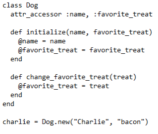

Programiranje orijentirano prema objektima je programska paradigma u kojoj programirate pomoću objekata kako biste predstavljali stvari koje programirate (ponekad stvarne stvari svijeta). Ti objekti mogu biti strukture podataka. Predmeti čuvaju podatke o njima u atributima. Atribute u objektima manipuliraju se metodama ili funkcijama koje se daju objektu.
Na primjer, možemo imati objekt osobe koji predstavlja sve podatke koje bi osoba imala: težinu, visinu, boju kože, boju kose, duljinu dlaka i tako dalje. To bi bili atributi. Tada bi objekt osobe također imao stvari koje mogu učiniti, kao što su: pokupiti kutiju, staviti kutiju dolje, jesti, spavati, itd. To bi bile funkcije koje se igraju s podacima koje predmet pohranjuje.
Inženjeri koji programiraju pomoću objektno orijentiranog dizajna kažu da je to stil programiranja koji vam omogućuje da model scenarija stvarnog svijeta bude mnogo jednostavniji. To omogućava dobar prijelaz iz zahtjeva u kod koji funkcionira kao što klijent ili korisnik to želi.
Neki primjeri objektno - orijentiranih jezika uključuju C + +, Java, Python, C #, Objective-C i Swift.
Prema Wikipediji, OOP "je programska paradigma temeljena na pojmu" objekata ", koji mogu sadržavati podatke, u obliku polja, često poznatih kao atributi; i kod, u obliku postupaka, često poznatih kao metode. Značajka objekata je da postupci nekog objekta mogu pristupiti i često mijenjati podatkovna polja objekta s kojim su povezani (objekti imaju pojam "ovo" ili "ja"), što u suštini znači promjenu "stanja" objekta.
Nadalje, u većini OOP jezika, objekti su instance klase, i vide se kao pojedinačni entiteti koji međusobno djeluju. Ovi objekti oponašaju stvarni svijet (do određenog stupnja)
